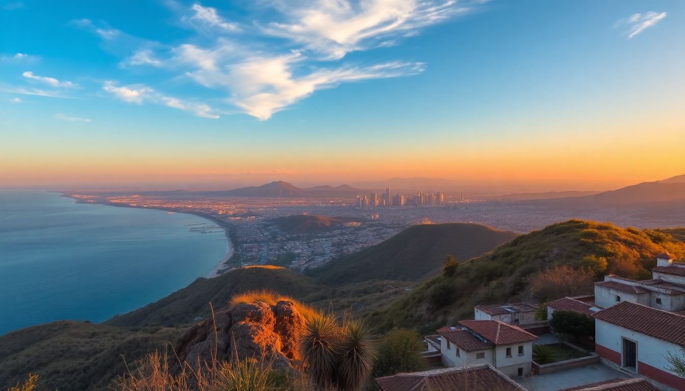

7-Day Mexico Itinerary: Mexico City, Oaxaca, Cancun

I had seven days to see three of Mexico’s most distinct regions—and I knew that trying to do everything would wreck the trip. Instead, I picked one anchor experience per city: the museums and street food in Mexico City, the mezcal and markets in Oaxaca, and the ruins and beach in Cancun. Here’s exactly how I pulled it off without burning out.
Why visit three cities in one week?
Flying between these cities is cheap and fast—Mexico City to Oaxaca is a 70-minute flight, and Oaxaca to Cancun is about two hours. The trade-off is that you lose half a day each time you move, but the variety makes up for it. You get high-altitude colonial energy, then earthy Oaxacan valleys, then Caribbean coastline. I wouldn’t do this with a family or if you hate early flights, but for a solo or couple trip, it works.
What should you do in Mexico City (Days 1–2)?
I landed at MEX airport and took a pre-booked taxi to Condesa, my base for two nights. I stayed at Hotel Condesa DF—it’s central, walkable to the park, and the rooftop bar is a solid spot to orient yourself. Skip the Zócalo on your first day if you’re jet-lagged; it’s overwhelming.
- Morning of Day 1: Chapultepec Castle and the Museo Nacional de Antropología—the anthropology museum is world-class and you need at least two hours.
- Lunch: Tacos El Califa near the park. Their gaonera taco (thin-sliced beef) is the standout.
- Afternoon: Walk through La Condesa and Roma Norte neighborhoods. Hit Mercado Roma for a snack and a craft beer.
- Evening: Dinner at Pujol if you booked months ahead, or Contramar for the tuna tostadas and grilled fish—show up at 1:30 PM for a walk-in slot.
Day 2 was about Coyoacán. I took an Uber (cheap, ~$5 USD) and spent the morning at Frida Kahlo’s Blue House—book tickets online two weeks ahead. Afterward, Mercado de Coyoacán for tostadas de pata and a pulque tasting at a stall near the back.
How do you get to Oaxaca and what’s worth your time (Days 3–4)?
I flew Volaris from MEX to OAX—the airport is tiny and a 20-minute cab from the city center. I stayed at Hotel Azul Oaxaca in the historic center. It’s quiet, has a courtyard pool, and is two blocks from the Santo Domingo church complex.
- Day 3 afternoon: Mercado Benito Juárez for tlayudas (Oaxacan giant tortillas) and Mercado 20 de Noviembre for the pasillo de carnes asadas—you pick raw meat, they grill it in front of you. Don’t skip the chapulines (grasshoppers) from a spice stall.
- Evening: Mezcalería In Situ for a tasting flight. The owner, Ulises, will walk you through agave varieties. Prices start at 50 pesos per shot.
- Day 4: I booked a half-day tour to Monte Albán—the Zapotec ruins sit on a flattened mountain top. Bring water and sunscreen, there’s zero shade. Returned for lunch at Casa Oaxaca (the mole negro is the move).
- Late afternoon: Textile museum (Museo Textil de Oaxaca) if you like crafts, or just wander the Andador Turístico for alebrijes and black pottery.
Is it worth flying to Cancun for just two days (Days 5–7)?
Yes, but only if you stay near the archaeological zone, not the hotel strip. I flew Viva Aerobus from OAX to CUN and stayed at Hotel Xcaret Mexico—it’s expensive but includes access to all the Xcaret parks. If that’s out of budget, Hotel Casa Chukum in Puerto Morelos is a good mid-range alternative.
- Day 5: Arrive, check in, and spend the afternoon at Playa Delfines in Cancun’s hotel zone—it’s public, free, and has big waves. Dinner at El Fish Fritanga in Puerto Morelos for fried snapper.
- Day 6: Chichén Itzá. I left at 6:30 AM to beat the crowds and heat. The site opens at 8 AM. By 11 AM it was packed, so I left and drove to Cenote Ik Kil (15 minutes away) for a swim. The cenote is touristy but the water is clear and cold.
- Evening: Cenote Suytun near Valladolid is less crowded and has a natural light beam at 2 PM. Valladolid itself is worth a quick walk—Casa de los Venados has a stunning private tile collection.
- Day 7: Morning at Tulum ruins (beach-side, smaller than Chichén, but photogenic). Then I drove back to Cancun airport via the coastal road (307) and flew home.
What’s the best way to get between these cities?
Fly. Don’t take buses—the distances are too long. I used Volaris for MEX–OAX and Viva Aerobus for OAX–CUN. Both allowed a personal item and a carry-on for about $60–$80 USD per leg. Book direct on their websites, not third-party aggregators. For airport transfers in Cancun, I pre-booked ADO shuttle buses—they’re reliable and cheaper than taxis.
Where should you eat in each city?
- Mexico City: El Huequito (al pastor), Tortería Chupacabras (sandwiches), Pastelería Ideal (conchas for breakfast).
- Oaxaca: Criollo (Enrique Olvera’s Oaxacan spot—reserve ahead), La Biznaga (vegetarian-friendly), Empanadas de Chepina (street stall near the cathedral).
- Cancun area: La Parrilla (touristy but decent tacos), Taquería El Ñero (locals spot in Puerto Morelos), Cenote Sac Actun restaurant (surprisingly good cochinita pibil).
FAQ
Is seven days enough for Mexico City, Oaxaca, and Cancun? It’s tight but doable if you fly between cities and limit yourself to one major activity per day. You won’t see everything—skip the Cancun hotel zone parties and the Oaxaca coast—but you’ll hit the highlights. I wouldn’t add a fourth city.
What should I pack for this itinerary? Layers for Mexico City (it’s 60°F in the morning, 75°F by afternoon), a light jacket for Oaxaca evenings, and beach gear for Cancun. Bring a reusable water bottle with a filter—tap water is not safe anywhere in Mexico. Good walking shoes are non-negotiable for Monte Albán and Chichén Itzá.
Do I need to book tours in advance? For Frida Kahlo’s house and Chichén Itzá, yes—book at least two weeks ahead. For Monte Albán, you can buy tickets same-day at the site. Day tours from Cancun to Chichén Itzá are easy to find on arrival, but the early-morning self-drive option is cheaper and more flexible.
Conclusion
- Fly between cities—don’t waste time on long-distance buses.
- Base yourself in Condesa (CDMX), the historic center (Oaxaca), and Puerto Morelos or near Chichén Itzá (Cancun area).
- Book Frida Kahlo’s house and Chichén Itzá tickets in advance to skip lines.
- Eat street tacos in CDMX, tlayudas in Oaxaca, and cenote-swim in Yucatán.
- Keep your itinerary loose—one major thing per day, then wander.